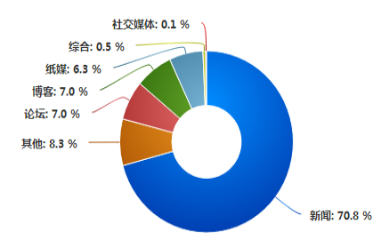
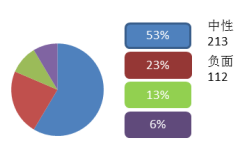

重庆质监缺陷管理分析系统
缺陷产品管理系统
loading......
Admin
退出
首页 > 互联网情报分析 > 行业分析
互联网情报预警
行业分析
品牌分析
产品分析
信息查询
选择行业：
汽车
摩托车
分析
检索文本
生成报告
行业热点话题-汽车
热门议内容
热度
趋势
来源
朗逸2016款 发动机 声响
3516
上涨
新浪微博
本田思域 车门脱落
3211
持平
新华网
日韩系汽车真的不安全吗
3516
上涨
腾讯网
三星也要做汽车了？
3516
下降
新浪微博
无人驾驶已成现实
3516
上涨
新浪微博
数据趋势分析
品牌最近召回信息

互联网情报地域分布

品牌经销商分布